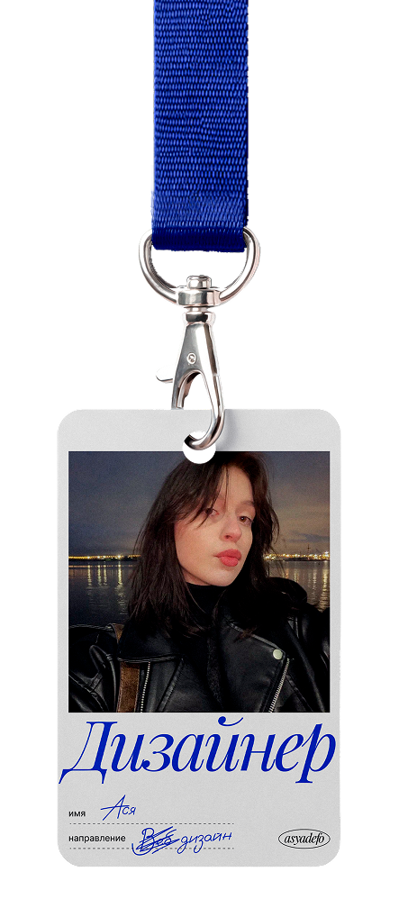
asyadefó
дизайнер
обо мне
Диджитал дизайнер из Санкт-Петербурга. Фокусируюсь
на минимализме, ясной структуре и визуальных
решениях, которые работают.
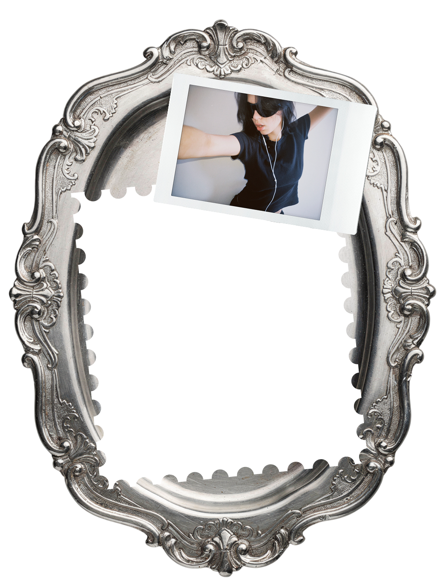
я считаю,
что красиво недостаточно.
Хороший дизайн должен быть одновременно
понятным, функциональным и неожиданным.
Меня вдохновляет психология восприятия,
экспериментальная типографика
и моменты, когда цифровой дизайн становится
реальным объектом: книгой, упаковкой, журналом
или пространством.
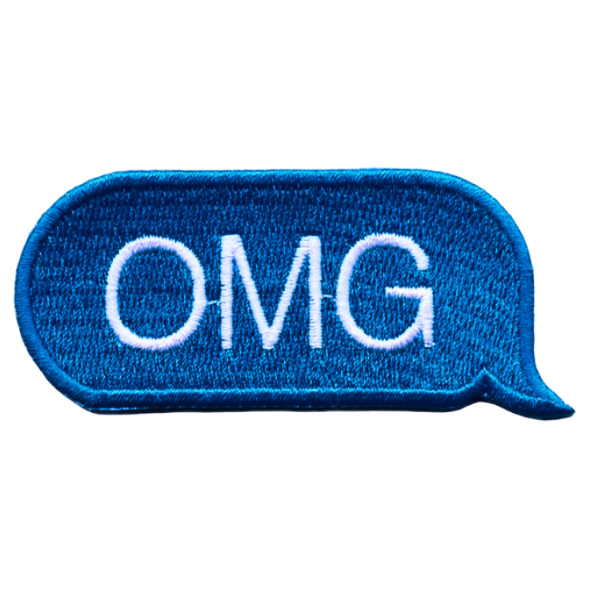
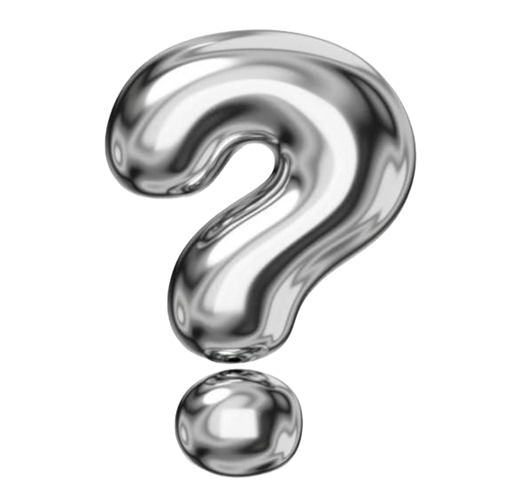
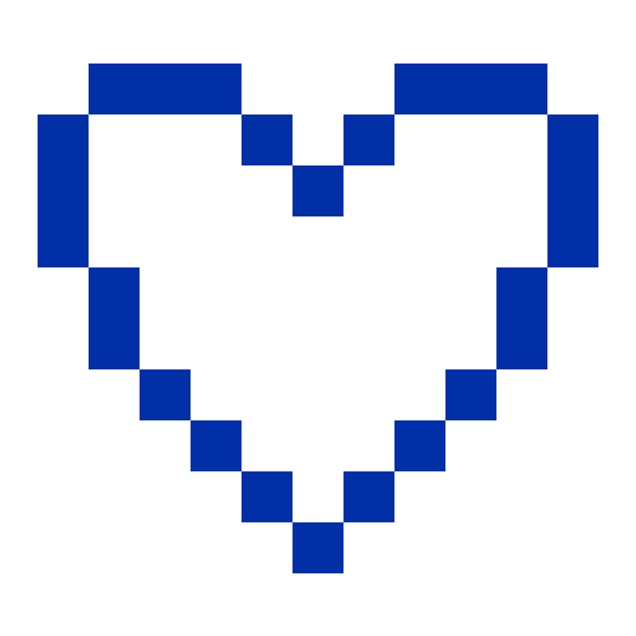
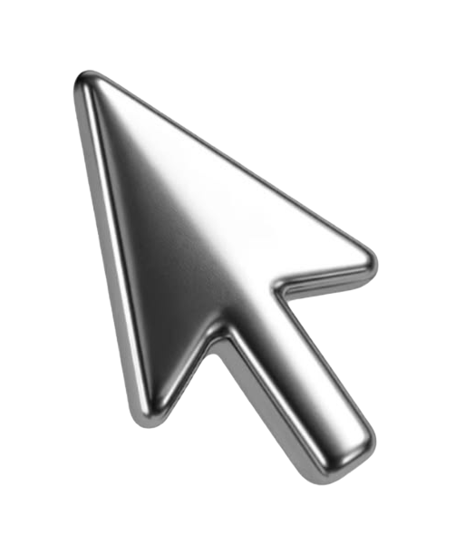
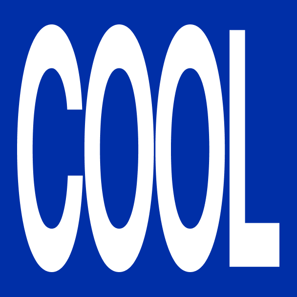
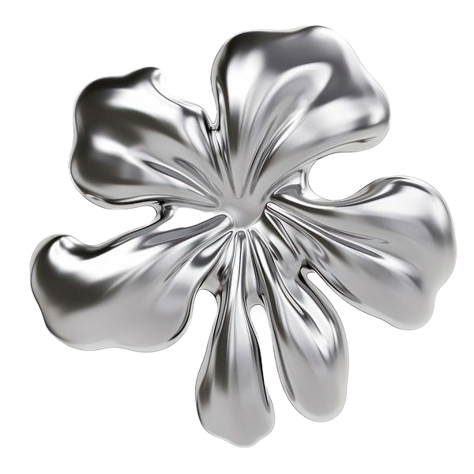
я работала с ними!
ПАО Газпром Нефть.
Разработка визуальных материалов для производственной безопасности, внутренних коммуникаций и Telegram-канала. Создание анимаций
и участие в разработке мобильного приложения. Работа
с данными и соблюдение фирменного стиля.
Студия ОтветДизайн.
Стажировка в дизайн-студии: участие в разработке концепции редизайна сервиса доставки еды «Достоевский» и работа над реальными клиентскими задачами.
Студия28.
Разработка сайта и визуальной концепции студии: от проработки идеи и структуры
до дизайна и реализации. Работа над реальными клиентскими проектами. Создание контента для Telegram и других социальных сетей с активным использованием ИИ в рабочих процессах.
Работы
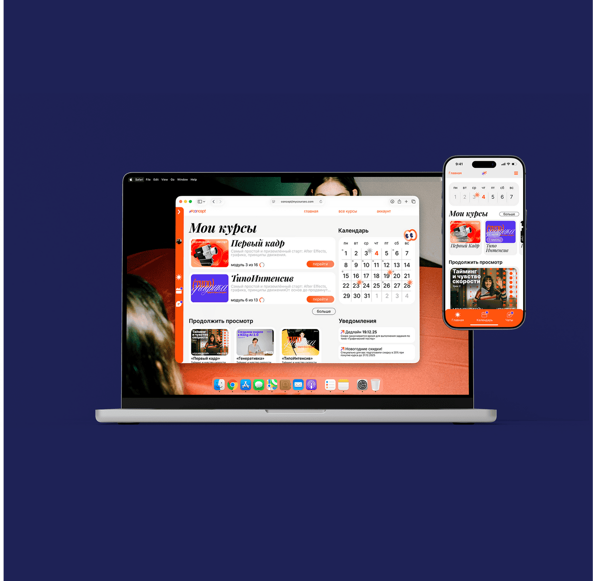
Карта для ТБанка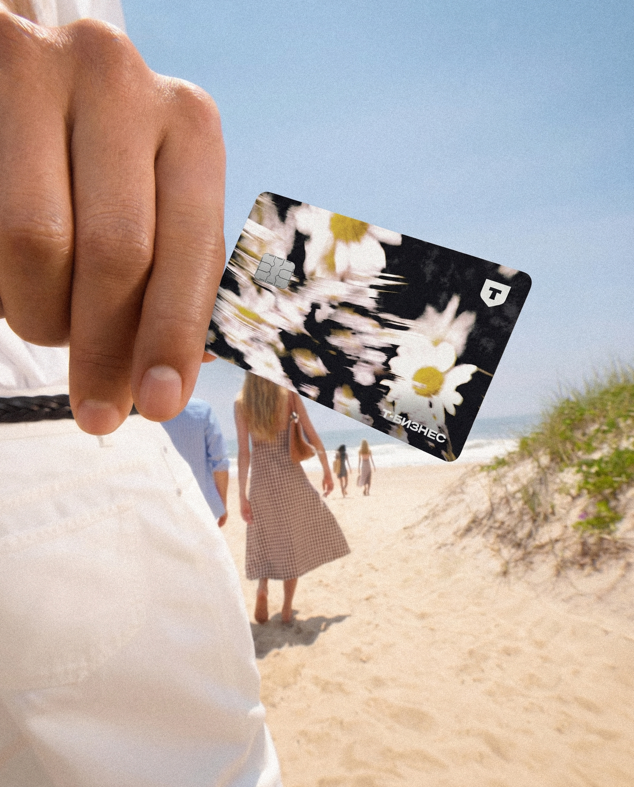
Studio 19 | Сайт магазина винила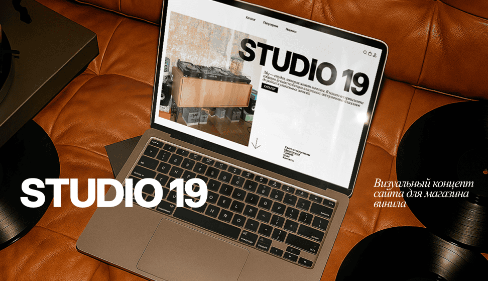
Сенс | Приложение умного дома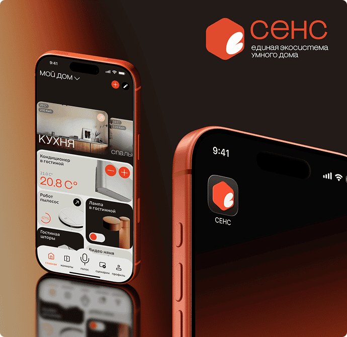
silence | журнал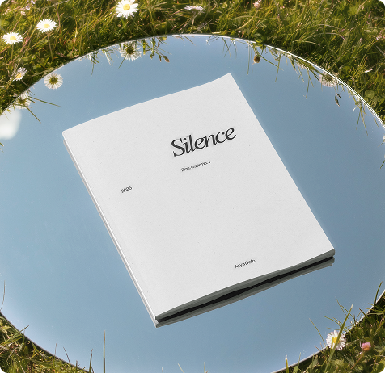
28 | Колода карт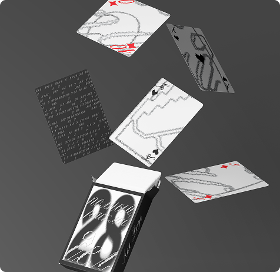
Архив
Отдельные проекты, эксперименты и графические решения
Есть идея? Обсудим.
Открыта к предложениям о работе, новым командам и проектам, в которых
есть пространство для интересных решений.
Для быстрого общения
Для предложений и деталей
Мысли, процессы и немного жизни